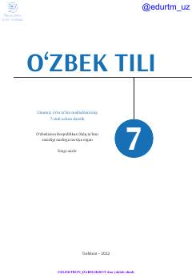

OT7-sinf o'quvchilari uchun mo'ljallangan o'zbek tili fani darsligi.
Ushbu darslik umumiy o'rta ta'lim maktablarining 7-sinf o'quvchilari uchun mo'ljallangan bo'lib, o'zbek tili fanidan davlat ta'lim standartlari asosida tuzilgan. Kitobda ona tili qoidalari, matn ustida ishlash va nutq madaniyatini rivojlantirishga oid mavzular qamrab olingan.